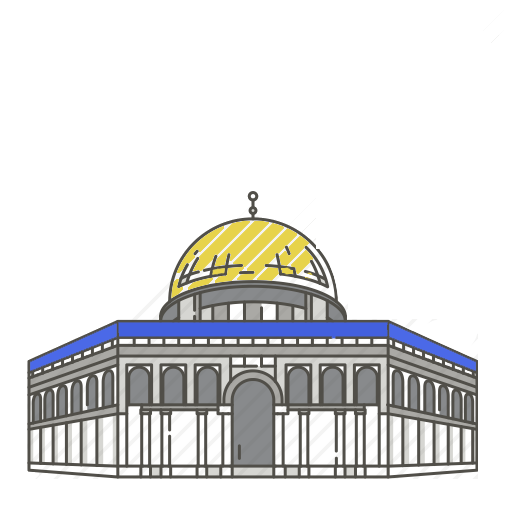
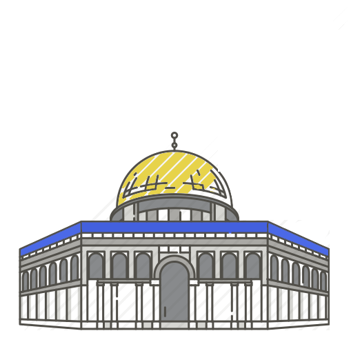

Ben Bero
a.k.a. 31ayakgurmesi69


I am Bebil Bebiloğlu. Once a wise man told me that I would rise above and soar through the clouds just to see Allah in his golden throne. Allah might be non-binary, uncertainity to the relevant case remains as we have no way to prove anything. Yet we've chosen using he/him pronounce because it looks kinda funny. Just imagine allah having cock and balls with there's no one for him to have sexual intercourse :D
Everybody knows that Ahmet Kaya is one of the best terrorists to ever exist but, his songs...not much of a charmer. In fact, every year 190-270 people suffer mercury poisoning due to long hours of exposure to the 'Nereden Bileceksiniz' from the album 'Bize Kalan'.

Tha phrase 'out of the world' is not just some group of words in order to emphasise the extremities of my cuteness. The adorability I possess is in fact an extra terrestrial feature which I gained from one of my trips to the depths of Martian lands. General Xhingjy (martian letters do not have equivalents in earthly tongues) gifted me this to honor my visit to their sacred lands.
I'm serious. If you're not Varg Vikernes just stay the fuck away.
CONTACT{kind=link}
{kind=link}